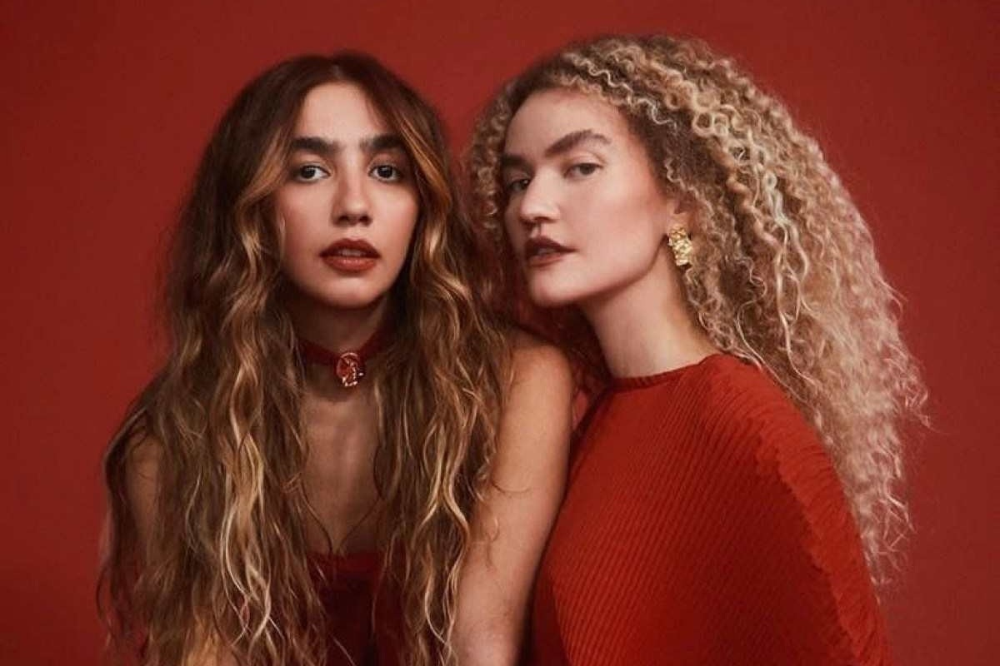
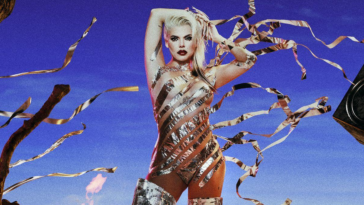
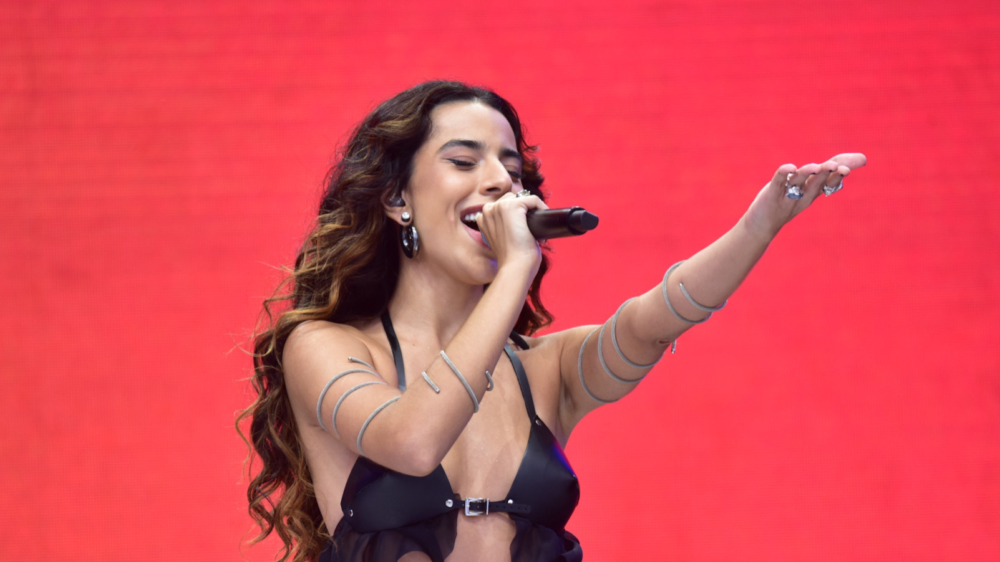
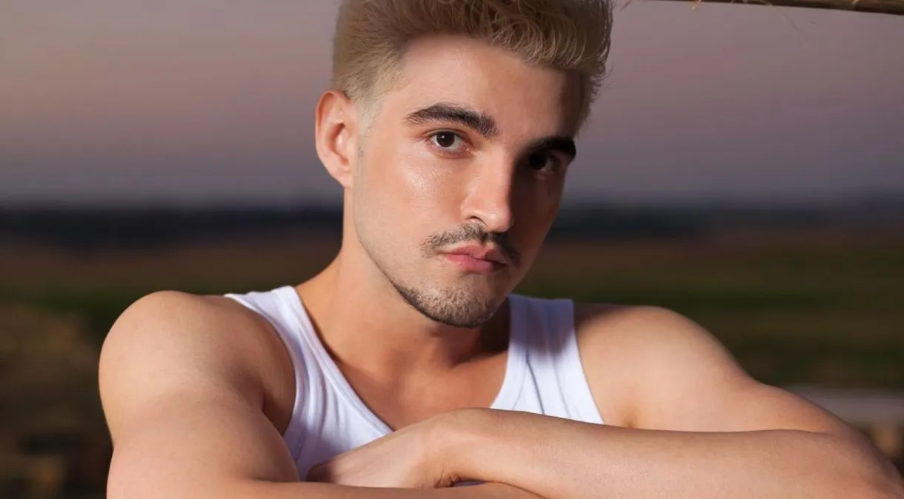

MPB Atualmente
O conceito de nova MPB é algo recente e, por isso, pode não estar muito claro para as pessoas. Essa categoria musical não coloca a MPB como algo velho, mas há um consenso de que ela representa renovação do estilo para as novas gerações.
“A MPB é sempre nova. Ela se renova na medida que o P de popular se restaura todos os dias, com novas canções e novos intérpretes. Ser nova é a característica mais marcante da MPB, que é um gênero que acompanha o povo”, Carlos Malta, músico e instrumentista. O termo está conectado às transformações do cenário musical brasileiro. São artistas que fazem músicas influenciadas pela “MPB tradicional”, mas que também trazem outros ritmos para a mesa.
A diversos artistas que contribuem para o "novo" MPB, dentre eles iremos citar alguns que achamos que merecem relevância pelo seu trabalho extraordinário!
Artistas da nova MPB para conhecer:
Anavitória
Uma dupla bastante conhecida quando assunto é cantoras brasileiras atuais da MPB é Anavitória, formada por Ana Clara Caetano e Vitória Falcão, naturais de Araguaína, cidade do Tocantins. Elas são amigas que se conheceram na faculdade de artes cênicas da Universidade Federal do Rio de Janeiro. Elas começaram a carreira em 2015, quando lançaram o EP “Anavitória”. Assim como os artistas desse gênero, elas misturam diversos gêneros, nesse caso, sendo folk, MPB, samba, afoxé e música eletrônica. As cantoras contam com mais de 4, 5 milhões de ouvintes mensais no Spotify e já ganharam premiações, como dois prêmios no Grammy Latino de 2021.
Duda Beat
A recifense Duda Beat é também uma das cantoras brasileiras atuais da MPB. Ela faz um pop sofrência com influências de brega, axé e música eletrônica e reune mais de 1,2 milhões de ouvintes mensais no Spotify. A artista começou a cantar no coral da igreja e depois em bandas de covers, além de já ter sido backing vocal dos discos de Letrux e Castello Branco. Em 2018, lançou seu primeiro álbum, Sinto Muito. Seu segundo álbum, Te Amo Lá Fora, foi lançado em 2021. Ela é considerada uma das revelações do pop brasileiro e já ganhou premiações, como o Prêmio Multishow de Música Brasileira.
Marina Sena
Em ascensão nos últimos anos, Marina Sena é um grande nome da nova MPB, cantora e compositora brasileira nascida em Minas Gerais. Ela faz um som que mistura MPB, pop, pop alternativo e indie pop e começou sua carreira musical em 2015, como vocalista da banda A Outra Banda da Lua. Em 2019, ela integrou o grupo Rosa Neon, que fez sucesso com a música “Ombrim”. Em 2021, ela lançou seu primeiro álbum solo, De Primeira, que contém os hits “Me Toca” e “Por Supuesto”. Marina ganhou o Grammy Latino de Melhor Álbum Pop Contemporâneo em Língua Portuguesa em 2022 e atualmente conta com 2,8 milhões de ouvintes mensais no Spotify.
Jão
Outro cantor de MPB atual é Jão, um cantor e compositor brasileiro. Ele faz um som juntando o MPB com o pop, além de influências de sofrência e brega. Ele começou sua carreira em 2016, postando covers de canções no YouTube. Em 2018,lançou seu primeiro EP, Primeiro Acústico, seguido por seu primeiro álbum, Lobos, no mesmo ano. Seu maior sucesso é a música “Imaturo”, que recebeu certificação de diamante no Brasil. Em 2019, ele lançou seu segundo álbum, Anti-Herói, que teve todas as suas faixas no top 200 do Spotify Brasil. Em 2021, ele lançou seu terceiro álbum, Pirata, que foi indicado ao Grammy Latino na categoria Melhor Álbum Pop Contemporâneo em Língua Portuguesa. São mais de 3,3 milhões de ouvintes mensais no Spotify.